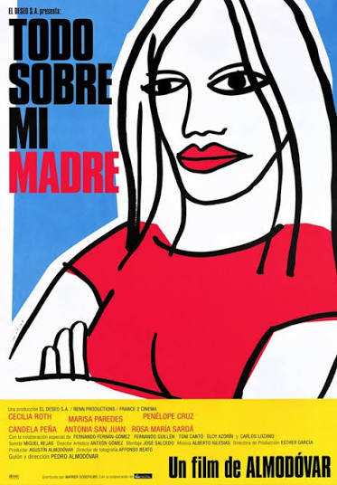
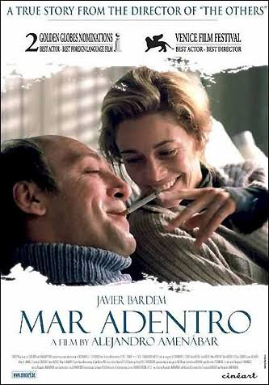
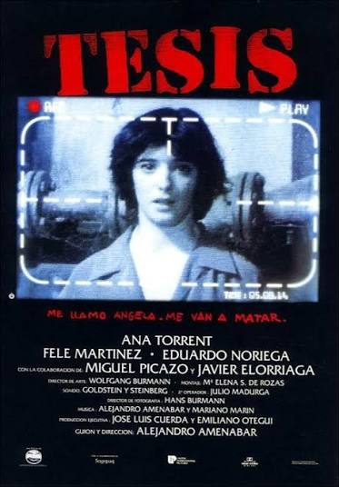
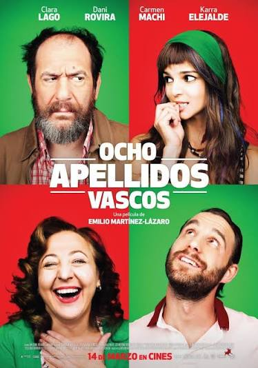
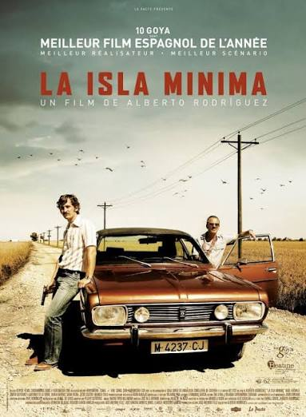
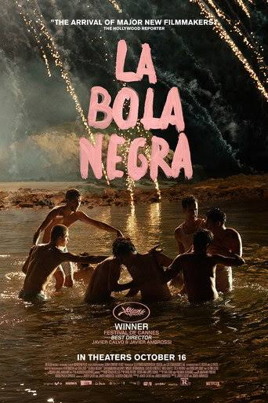
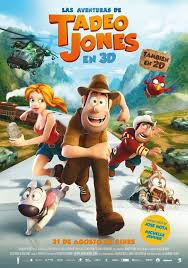

Galería del cine español
En esta galería encontrarás una selección de carteles, imágenes y escenas relacionadas con películas importantes del cine español. También podrás conocer algunos recursos audiovisuales de nuestra cinematografía.
Carteles de películas españolas







Explora los géneros cinematográficos
Selecciona una de las tres zonas de la imagen para consultar información sobre cada género.
Drama
Historias que exploran emociones y conflictos humanos.
Comedia
Películas que buscan entretener y provocar humor.
Thriller
Historias de suspense, misterio y tensión.
Vídeo: historia del cine español
Este vídeo local puede contener un resumen audiovisual de la evolución del cine español.
El vídeo explica los principales momentos de la historia del cine español. Si no se reproduce, comprueba que el archivo MP4 está guardado en la carpeta videos.
Audios cinematográficos
Banda sonora
Fragmento musical relacionado con el ambiente del cine.
Ambiente de una sala de cine
Audio con sonidos ambientales de una sala de cine, como el público y el inicio de una proyección.
Vídeo externo sobre el cine español
Video sobre la historia del cine español.
Filmoteca Española
La Filmoteca Española conserva y difunde el patrimonio cinematográfico. Puedes consultar su ubicación en el mapa.